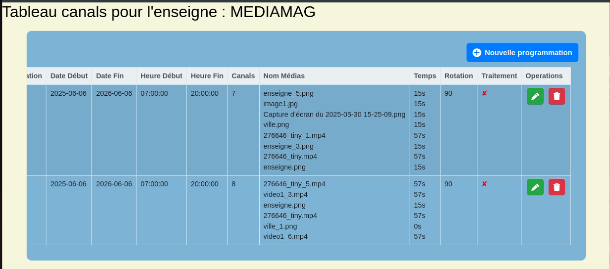
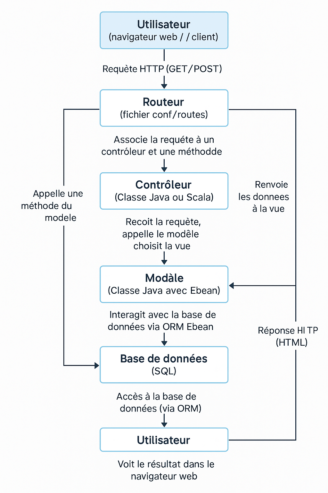

Mise à jour et interrogation d'une base de données
La mise à jour et l'interrogation d'une base de données sont essentielles pour gérer les données efficacement. Pendant mon stage, j'ai appliqué ces compétences pour manipuler les données multimédias et leurs plages d'affichage, en les structurant dans une base de données via Ebean afin de faciliter la gestion et l'affichage des contenus sur les écrans en magasin.
Tableau de Programmation pour une enseigne
Le tableau de programmation pour une enseigne montre une interface que j'ai développée pendant mon stage, permettant de définir des plages horaires, des canaux, et des médias (images et vidéos) à afficher, avec des options de gestion comme la rotation et le traitement.

Cette interface illustre une application concrète de la compétence "Gérer des données d'information", apprise en cours sous forme de bases de gestion de bases de données relationnelles. Lors de mon stage, j'ai acquis un savoir-faire en structurant et manipulant des ensembles de données complexes, en intégrant des champs tels que les dates, les temps, et les identifiants d'enseignes, tout en assurant une visualisation claire pour l'utilisateur. La gestion des opérations (ajout, suppression) via des boutons interactifs m'a appris à concevoir des interfaces utilisateur qui facilitent la modification des données en temps réel.
Ce savoir se distingue par ma capacité à traduire des besoins fonctionnels en une structure de données opérationnelle, un savoir-faire que j'ai approfondi en dépassant les simples notions théoriques vues en cours. L'utilisation d'une ORM comme Ebean dans ce contexte m'a permis d'automatiser les interactions avec la base de données, renforçant ma compréhension de la persistance des données et de leur cohérence, une compétence que je n'avais pas pleinement explorée auparavant.
Diagramme d'Architecture MVC
Le diagramme d'architecture MVC présenté illustre le flux de gestion des données entre un utilisateur (via un navigateur web ou client), un routeur, un contrôleur, un modèle, et une base de données SQL, en utilisant une ORM comme Ebean.

Ce schéma reflète une structure que j'ai mise en œuvre lors de mon stage pour développer une interface de gestion de contenu multimédia, où les requêtes HTTP (GET/POST) sont traitées pour associer des plages horaires et des médias à afficher sur les écrans en magasin. Cette expérience m'a permis de développer un savoir-faire dans la gestion des données d'information, notamment en comprenant comment organiser le flux de données à travers différentes couches d'une application web. En cours, j'avais étudié les bases du modèle MVC (notamment grâce à une SAE en fin de première année), mais son application pratique avec Ebean m'a appris à manipuler efficacement les interactions entre le modèle (gestion des données via ORM) et la base de données, assurant une récupération et une mise à jour cohérentes des informations. Ce savoir-faire se manifeste par ma capacité à concevoir une architecture modulaire où chaque couche a une responsabilité claire, optimisant ainsi la maintenance et l'évolutivité du système.
Cette analyse dépasse une simple description en démontrant ma maîtrise d'une compétence technique acquise, en l'adaptant à un contexte professionnel où la flexibilité et la précision dans la gestion des données étaient essentielles.
Méthode d'Insertion et Suppression d'une Programmation
public static void insererProgrammation(int idMagasin, java.sql.Date dateRealisation, java.sql.Date dateDebut, java.sql.Date dateFin, java.sql.Time heureDebut, java.sql.Time heureFin, String canalS, String tempsCanal, int rotatioN, Boolean traitemenT, int villeId, int enseigneId) {
models.Affichage affichage = new models.Affichage();
affichage.id_magasin = idMagasin;
affichage.date_realisation = dateRealisation;
affichage.date_debut = dateDebut;
affichage.date_fin = dateFin;
affichage.heure_debut = heureDebut;
affichage.heure_fin = heureFin;
affichage.canals = canalS;
affichage.temps_canal = tempsCanal;
affichage.rotation = rotatioN;
affichage.traitement = traitemenT;
affichage.ville_id = villeId;
affichage.enseigne_id = enseigneId;
// Sauvegarde
affichage.save();
}
public static Map supprimerProgrammationGetInfo(Long id) {
Affichage affichage = Affichage.find.byId(id);
Map result = new HashMap<>();
if (affichage != null) {
result.put("ville_id", affichage.ville_id);
result.put("enseigne_id", affichage.enseigne_id);
List numerosCanaux = affichage.getNumerosCanaux();
if (!numerosCanaux.isEmpty()) {
result.put("numero_canal", numerosCanaux.get(0));
} else {
result.put("numero_canal", null);
}
affichage.delete();
}
return result;
}
La méthode Java présentée, utilisant Ebean pour insérer et supprimer des programmations dans une base de données, permet de gérer les données associées aux affichages multimédias en magasin. Cette implémentation reflète mon travail lors du stage, où j'ai développé une logique pour enregistrer des paramètres comme les dates, heures, et identifiants, puis les supprimer avec récupération d'informations. En cours, j'avais abordé les bases de la manipulation de données via SQL, mais cette expérience m'a doté d'un savoir-faire avancé en utilisant Ebean pour encapsuler ces opérations, ce qui m'a appris à gérer les relations entre objets et la persistance des données de manière efficace. Ma capacité à structurer un objet et à utiliser des méthodes tels que save() ou delete() démontre une compréhension approfondie de la gestion des cycles de vie des données.
Ce savoir-faire s'étend au-delà d'une simple exécution de code, car j'ai dû adapter ces méthodes à un contexte réel où la cohérence des données (par exemple, les liens entre villes et enseignes) était cruciale. L'utilisation d'Ebean, bien que nouvelle, m'a permis de maîtriser l'abstraction des accès à la base, un aspect que je n'avais pas pratiqué en cours, prouvant ainsi une acquisition concrète de compétences en gestion d'information dans un environnement professionnel.